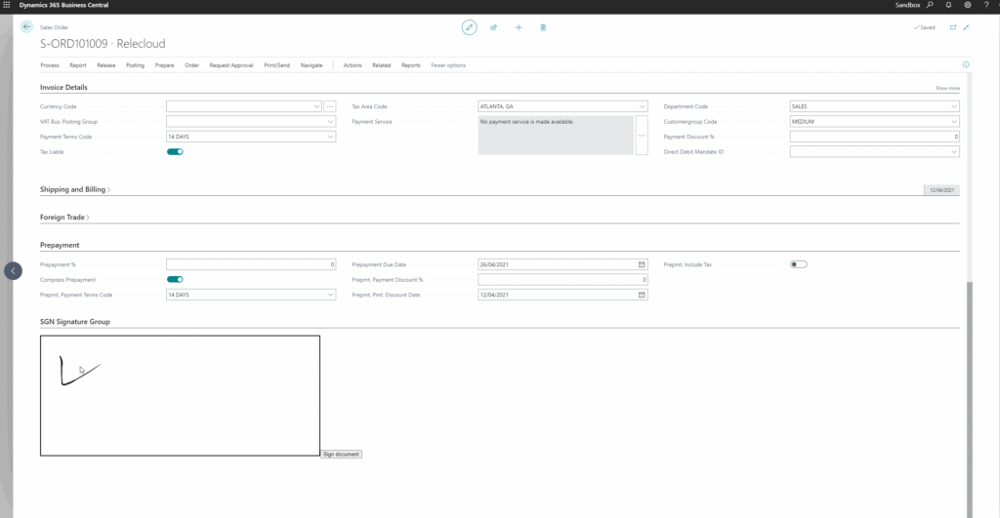

Business Central's control add-in framework allows embedding custom HTML and JavaScript inside pages. We can use this to integrate the open-source signature_pad library, giving users a canvas to draw their signature directly inside BC. The signature is then stored as a Blob on the record and can be printed on documents.
First, extend the target table to add a Blob field for storing the signature, and add a procedure to trigger the sign action from AL:
tableextension 55000"Signature Table Ext" extends"Sales Header"
{
fields
{
field(55000;"Signature"; Blob)
{
Caption = 'Signature';
SubType = Bitmap;
}
}
procedure SignDocument()
var
SignatureControlAddIn: ControlAddIn"Signature Pad";
begin
// Trigger the control add-in to open the signature canvas
// The add-in returns the base64 PNG which is stored in the Blob
CurrPage."SignaturePad".InitializeSignaturePad();
end;
}Next, the JavaScript control add-in initializes the signature_pad library, sets up the canvas, and wires up a submit button that sends the signature data back to AL via Microsoft.Dynamics.NAV.InvokeExtensibilityMethod:
function InitializeSignaturePad() {
var canvas = document.getElementById('signature-canvas');
var signaturePad = new SignaturePad(canvas, {
backgroundColor: 'rgb(255, 255, 255)',
penColor: 'rgb(0, 0, 0)'
});
// Resize canvas to fill the container
function resizeCanvas() {
var ratio = Math.max(window.devicePixelRatio || 1, 1);
canvas.width = canvas.offsetWidth * ratio;
canvas.height = canvas.offsetHeight * ratio;
canvas.getContext('2d').scale(ratio, ratio);
signaturePad.clear();
}
window.addEventListener('resize', resizeCanvas);
resizeCanvas();
// Submit button sends base64 PNG back to AL
var submitButton = document.getElementById('submit-signature');
submitButton.addEventListener('click', function() {
if (signaturePad.isEmpty()) {
alert('Please provide a signature first.');
return;
}
var signatureData = signaturePad.toDataURL('image/png');
Microsoft.Dynamics.NAV.InvokeExtensibilityMethod('SignatureSubmitted', [signatureData]);
});
// Clear button
document.getElementById('clear-signature').addEventListener('click', function() {
signaturePad.clear();
});
}
The full source code including the control add-in manifest, the AL extension, and the JavaScript bundle is available on GitHub: